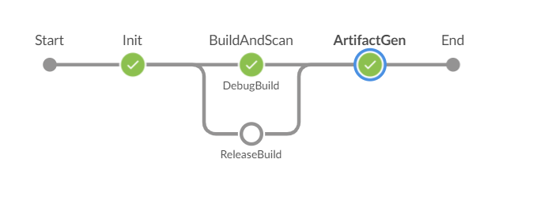
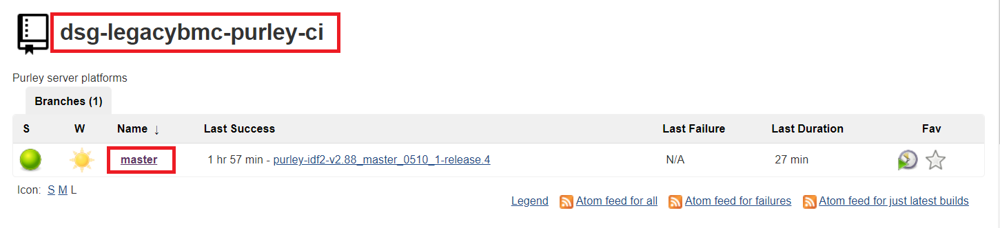
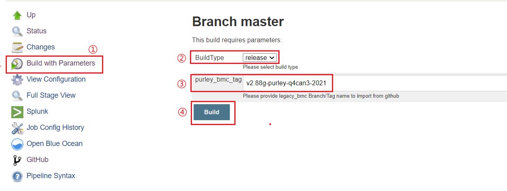
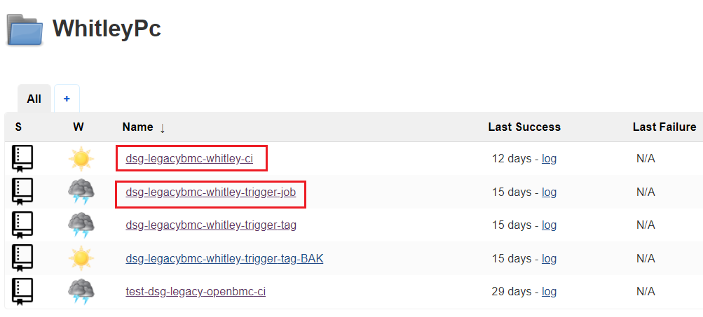
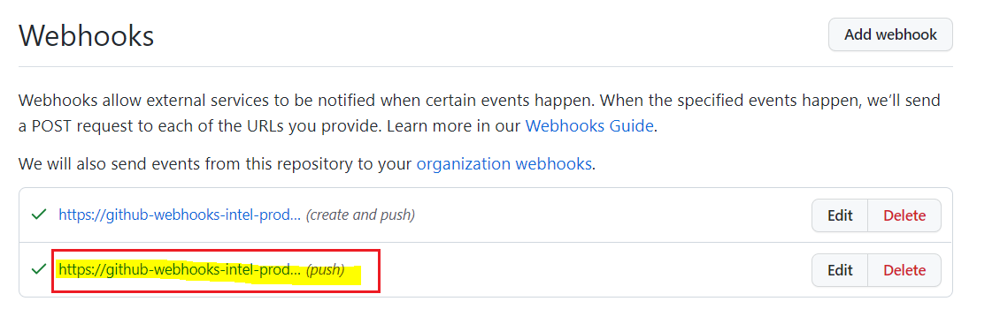
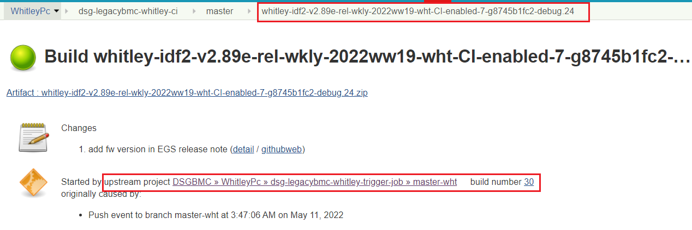
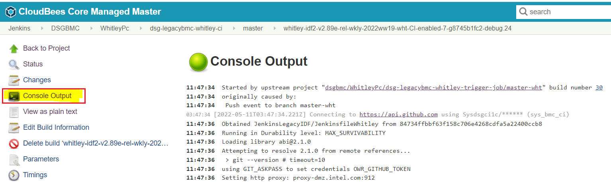
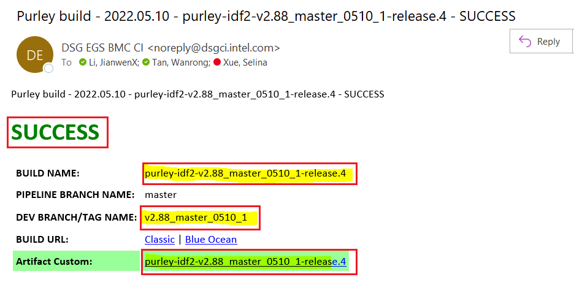

Legacy BMC CI Process¶
Introduction¶
Legacy BMC firmware (Board Management Controller) is used to monitor devices such as CPU, PSU (Power Supply Unit), SSD (Solid State Drive) on Purley/Whitley server platforms.
Our DSG CI team is expected to standardize an efficient process of CI/CD with high performance for Commercial BMC FW of Purley/Whitley in SH site.
Build Preparation¶
Code Repo¶
dsg-legacy-bmc: Purley and Whitley platforms have common code repo in Intel-collab organization
Build Key¶
Debug and release build key related files need to be stored in build server before Purley/Whitley CI build.
1.Debug build key¶
debug build key is obtained by local host .
file path of debug build key:
/usr/local/etc/deg-bmcfw/configs-purley/keystore/Purley/developmentKeys.tar.gz
debug build key generally does not need to be updated.
2.Release build key¶
release build key is obtained via Tulum server with SSH connection
Hostname tulum.jf.intel.com User epsdfw IdentityFile ~/.ssh/epsdfw-id_rsa
file path of release build key:
/usr/local/etc/deg-bmcfw/configs-purley/keystore/Purley/Production-Key-2015-Sep-25
Server for storing release build’s key is maintained by Vernon and this server won’t retire from storing key duties in foreseeable future.
3. KVM Key¶
File path:
/usr/local/sbin/IntelSign/signfile-lin-x64-4.0.87/SignFile.config.xml
KVM Key is updated every six months, and new key could be obtained from EDSS website.
Intel Sign Tool¶
Sign is necessary step for both debug build and release build so tools need to be stored in build server before build.
File path:
/usr/local/sbin/IntelSign
Intel sign tool is usually not updated.
Build Command¶
For legacy BMC, it have two types of builds : debug build and release build.
####1.Debug build:
BUILD_NUMBER=$number MYMCU=AST2500 ./scripts/build.sh
2.Release build:¶
BUILD_NUMBER=$number MYMCU=AST2500 ./scripts/build.sh --release
Build Configuration Files¶
(1) Buildconfig.json
Build script
Artifactory directory
(2) Manifest.xml
Code repo info : repo link 、faceless account
(3) PackageGen.json
Specify the files to package
(4) Jenkinsfile
build stage 
Build Agent¶
1. OS requirements:¶
ubuntu 20.04.3 LTS
2. Open Source Libraries/Tools:¶
| uboot-mkimage | libxtst-dev |
|---|---|
| lib32stdc++6 | g++-5-multilib |
| lib32z1 | gcc-5-multilib |
| meson | Python 3.8.2 |
| libglib2.0 | Python 2.7 |
3. Config info of docker image¶
(1) Docker file :
Docker file repo in the intel-innersource
(2) Docs:
(3) Intel Video Portal
Build Flow¶
We are expected to enable below three build types:
(1) Purely FW Release build
(2) Whitley FW Release build
(3) Whitley PR debug build
Purely FW Release build¶
1.Build job: dsg-legacybmc-purley-ci¶

2.How to trigger build based on tag in Jenkins¶
(1). Click on “Build with Parameters” to manually trigger build (2). Click on “Build Type” to choose build type: debug or release (3). Click on “purley_bmc_tag” to fill in the tag name, and the default value is “v2.88g-purley-q4can3-2021” (4). Click on “Build” to run this build job

Whitley PR debug build¶
1.Trigger job: dsg-legacybmc-whitley-trigger-job¶
2.Build job: dsg-legacybmc-whitley-ci¶

3.How to trigger build¶
(1) Auto-trigger Mechanism
We set up a Webhook for Legacybmc code repo and this webhook will keep our trigger job to be notified when code push events happen. 
Once trigger job has been notified, the trigger job will trigger downstream job: “dsg-legacybmc-whitley-ci”.
(2) Manual-trigger Method 
The trigger method is the same as Purely FW Release build.
Whitley FW Release build¶
1.Trigger job: dsg-legacybmc-whitley-trigger-tag¶
2.Build job: dsg-legacybmc-whitley-ci¶
3.How to trigger build¶
(1) Auto-trigger Mechanism
When a new tag is generated , this trigger job will receive the notification from webhook.
Then trigger job will trigger downstream job: “dsg-legacybmc-whitley-ci”.
(2) Manual-trigger Method
The trigger method is the same as Purely FW Release build.
Troubleshoot build failure¶
If you encounter build failure,pls click on “Console Output” to view the build log to find the root cause.

Build Result Post¶
Once build complete,the mail notification will deliver to related recipient.
The mail includes build info – build result , Artifactory link and so on.
